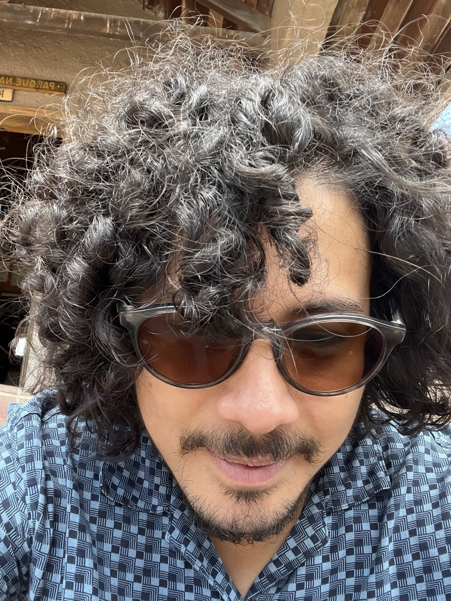
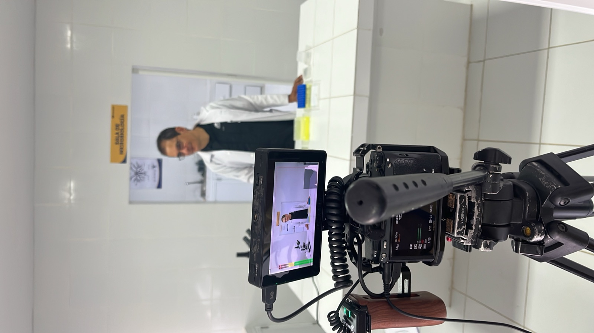
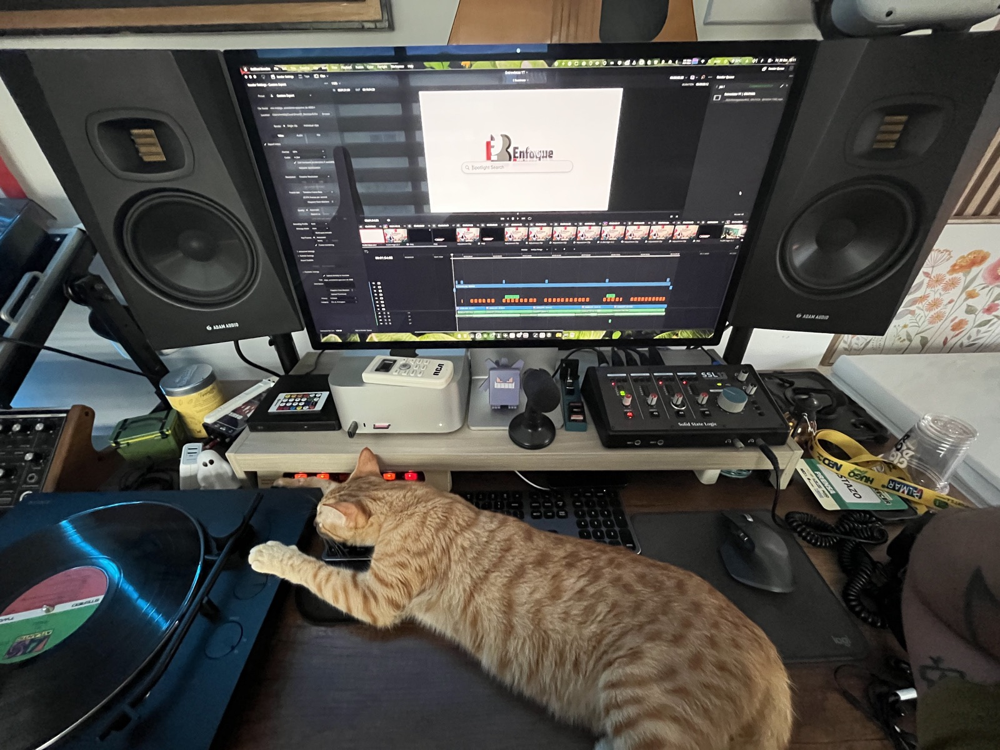
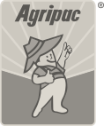

Realizador audiovisual · Drone · Postproducción
Grabo, vuelo, edito, coloreo y mezclo.
Reportajes, documentales, reels y entrevistas desde Guayaquil, del rodaje a la exportación final.
Servicios
Puedes contratar el proceso completo o solo una parte: el rodaje, el drone, la edición, el color o el audio.
Trabajos
Color y sonido
Arrastra la línea para comparar el material plano con el resultado final y cambia de escena abajo. Las imágenes son de mis rodajes.
El material sale plano de cámara y se lleva a un look final, con pieles naturales y el mismo color entre cámaras y drone.
Presets
Audio de entrevistas
Limpio voces, edito la música al corte y entrego con el volumen correcto para cada plataforma.
- Limpieza de diálogoRuido, eco, viento y clics fuera, con apoyo de IA para aislar voces.
- MusicalizaciónMúsica con licencia o compuesta, editada a la imagen.
- MezclaBalance voz / música / ambiente, EQ, compresión y de-esser.
Cómo trabajo
Un proceso claro, con entregas por etapa y revisiones sobre la marcha.
Herramientas de IA en postproducción
Las uso para tareas mecánicas: transcribir, subtitular, aislar voces o reencuadrar a vertical. El montaje, el color y la mezcla los hago yo.

Hola, soy Ronald Guzmán Dávila.
Realizador audiovisual con 14 años de oficio. Trabajo entre el periodismo, el documental y el contenido para marcas.
Grabo, vuelo el drone, edito, coloreo y mezclo mis propios proyectos, así que desde el rodaje ya sé cómo se va a montar y mezclar.



Contacto
Cuéntame qué tipo de pieza necesitas, para cuándo y dónde se va a publicar. Respondo en menos de 24 horas.